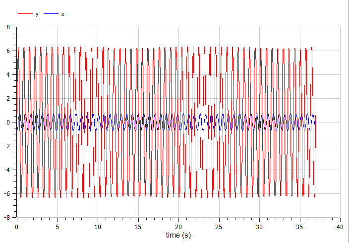
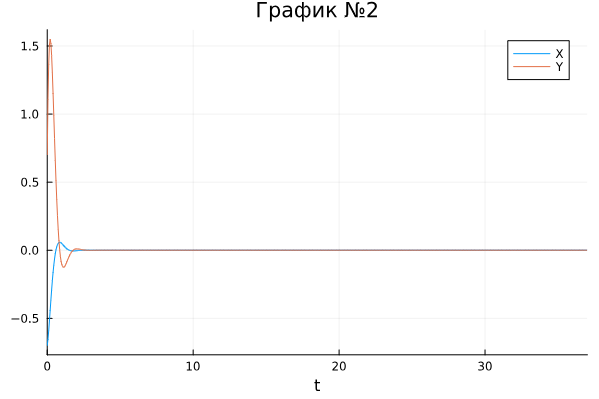
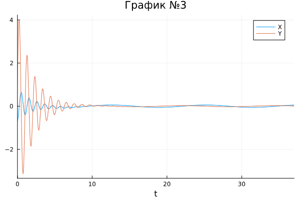

- Камкина Арина Леонидовна
- студентка
- Российский университет дружбы народов
- 1032216456@pfur.ru
- https://alkamkina.github.io/ru/

Исследовать математическую модель гармонического осциллятора и построить графики, используя языки Julia и OpenModelica.
Гармони́ческие колеба́ния — колебания, при которых физическая величина изменяется с течением времени по гармоническому (синусоидальному, косинусоидальному) закону. Движение грузика на пружинке, маятника, заряда в электрическом контуре, а также эволюция во времени многих систем в физике, химии, биологии и других науках при определенных предположениях можно описать одним и тем же дифференциальным уравнением, которое в теории колебаний выступает в качестве основной модели. Эта модель называется линейным гармоническим осциллятором.
Уравнение свободных колебаний гармонического осциллятора имеет следующий вид: $$ \ddot x + 2\gamma\dot x + \omega _0^2x = 0 $$ где $x$ – переменная, описывающая состояние системы (смещение грузика, заряд конденсатора и т.д.), $\gamma$ – параметр, характеризующий потери энергии (трение в механической системе, сопротивление в контуре), $\omega$ – собственная частота колебаний, $t$ – время.
Постройте фазовый портрет гармонического осциллятора и решение уравнения гармонического осциллятора для следующих случаев
На интервале $t \in [0; 37]$ (шаг 0.5) с начальными условиями $X = -0.7, , Y=0.7$
using Plots
using DifferentialEquations
X = -0.7
Y = 0.7
R1 = [0, 9]
tspan = (0, 37)
#без действия внешний силы
function f_1(dx, x, p, t)
g, w = p
dx[1] = x[2]
dx[2] = -w^2*x[1] - g*x[2]
end
prob1 = ODEProblem(f_1, [X, Y], tspan, R1)
sol1 = solve(prob1, Tsit5(), saveat = 0.05)
plot(sol1, title = "График №1", label = ["X" "Y"])
Полученный график(рис. @fig:001).
model lab_04
Real x(start=-0.7);
Real y(start=0.7);
parameter Real w=9;
parameter Real g=0;
equation
der(x)=y;
der(y)=-w^2*x-g*y;
end lab_04;
Полученный график(рис. @fig:002).
{#fig:002 width=70%}
Полученный график(рис. @fig:001).
using Plots
using DifferentialEquations
X = -0.7
Y = 0.7
R2 = [5.5, 4.4]
tspan = (0, 37)
#без действия внешний силы
function f_1(dx, x, p, t)
g, w = p
dx[1] = x[2]
dx[2] = -w^2*x[1] - g*x[2]
end
prob2 = ODEProblem(f_1, [X, Y], tspan, R2)
sol2 = solve(prob2, Tsit5(), saveat = 0.05)
plot(sol2, title = "График №2", label = ["X" "Y"])
Полученный график(рис. @fig:003).
{#fig:003 width=70%}
model lab_04_2
Real x(start=-0.7);
Real y(start=0.7);
parameter Real w=4.4;
parameter Real g=5.5;
equation
der(x)=y;
der(y)=-w^2*x-g*y;
end lab_04_2;
Полученный график(рис. @fig:004).
using Plots
using DifferentialEquations
X = -0.7
Y = 0.7
R3 = [1, 6]
tspan = (0, 37)
#внешняя сила
f(t) = 2*cos(0.5*t)
#с действием в нешней силы
function f_3(dx, x, p, t)
g, w = p
dx[1] = x[2]
dx[2] = -w^2*x[1] - g*x[2] + f(t)
end
prob3 = ODEProblem(f_3, [X, Y], tspan, R3)
sol3 = solve(prob3, Tsit5(), saveat = 0.05)
plot(sol3, title = "График №3", label = ["X" "Y"])
Полученный график(рис. @fig:005).
{#fig:003 width=70%}
model lab_04_03
Real x(start=-0.7);
Real y(start=0.7);
Real f;
parameter Real w=6;
parameter Real g=1;
equation
der(x)=y;
der(y)=-w^2*x-g*y+f;
f=2*cos(0.5*time);
end lab_04_03;
Полученный график(рис. @fig:006).
В процессе выполнения данной лабораторной работы я построила графики, используя Julia и OpenModelica, а также приобрела первые практические навыки работы с Julia и OpenModelica.